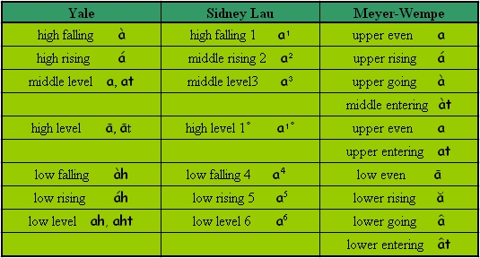
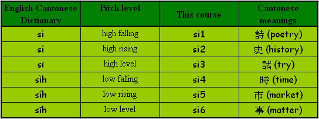
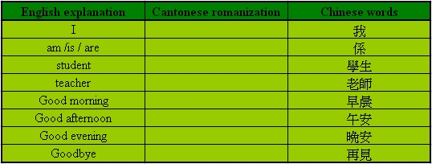

Unit 1 Introduction
Unit 1 Introduction
1. The Cantonese Romanization System
The Chinese language is extremely diverse; however, speakers of the different varieties of Chinese do not regard themselves as members of different linguistic communities. Traditionally, Cantonese has been considered a dialect of Chinese. Indeed, it is the only variety of Chinese with widely recognized non-traditional written characters for words and expressions (Snow, 2004).
Cantonese is the first language of about 66 million people, particularly in the south eastern part of China, Guangdong, Guangxi, Hainan, Hong Kong and Macau. Cantonese is also widely used in overseas Chinese communities in many other countries including Malaysia, Singapore (Ager, 2006).
Since the vast majority of the residents of Hong Kong are Cantonese speakers, it is natural that expatriates studying and or working here will have an interest in acquiring the language. However, among those who try there is a general lack of success in attaining Cantonese communicative competence. A number of reasons may account for this, some of them purely linguistic. For instance, Cantonese and English are typologically far apart as languages. This makes Cantonese particularly difficult to learn for speakers of European languages such as English. Phonemic tone, vowel length and a variety of exotic phonemes prove daunting to beginners.
Although a variety of published material and numerous courses are available to assist the expatriate in the difficult task of acquiring Cantonese, they are rarely effective. In learning Cantonese as a foreign language, the most effective way of attaining the ability to understand and speak the language is through the use of a method in which new vocabulary and sentence structures are introduced systematically in meaningful contexts. The newly introduced language would be revisited periodically in new dialogues and practice activities. Drills as well as clear explanatory notes would be provided.
An essential component of any approach to the teaching of a non-alphabetic language such as Cantonese is an easily understandable system for rendering the words of the language into alphabetic characters, in other words a ‘romanization’ system. Unfortunately, a wide range of romanization systems are in use for learning Cantonese and no standard has emerged comparable to the Pinyin used for Mandarin. In Hong Kong, two major romanization schemes are used for Cantonese – the Meyer-Wempe and Yale schemes. The Yale system is the one most commonly seen in the west today. The Hong Kong linguist Sidney Lau modified the Yale system for his popular ‘Cantonese as a second language’ course, and his system is is widely used today by contemporary Cantonese speakers (Cantonese Learning Centre, 2006). Comparative Chart of the three Romanization systems (Meyer-Wempe, Yale and Sidney Lau) is in Appendix I.
In this course, Lau’s Cantonese Yale romanization system is used in preference to the traditional one as it is regarded as a practical system easily understood by Western learners of Cantonese. Many of the Cantonese Yale transcriptions resemble symbols of the International Phonetic Alphabet and the Pinyin romanization used for Mandarin (also known as Putonghua in Hong Kong). Through this system, Cantonese vowels can be matched to the vowel system of English. Furthermore, the English-Cantonese dictionary we encourage students to use in this course is one of the few dictionaries which accords with the Yale system of romanization and is amenable for Cantonese teaching and learning. We believe that learning is most effective when learners are aware of the available tools that might be helpful to their self-learning.
Cantonese is a tonal language. This means that the same syllable pronounced on different pitches, or with different voice contours, carries different meanings. The tonal system of Cantonese is quite complex and different classification systems recognise different numbers of tones according to how they analyse the system. There are four distinct tones (i.e. even, rising, going and entering) which all scholars agree on. According to the traditional classification, Cantonese has a total of nine distinct tones which involve three pitch levels: high, mid and low. High, mid and low exist individually as level tones, which are relatively easy to pronounce and serve as points of reference for the other three tones which rise or fall from one level to another (Matthews & Yip, 2004).
1.This system was developed by two Catholic missionaries in Hong Kong during the 1920s and 1930s – Bernhard F. Meyer and Theodore F. Wempe.
2.The Yale romanization system was developed at Yale University by Parker Huang and Gerald Kok. It is designed for American students learning Cantonese and the pronunciation is based on American English.
3.The Sidney Lau romanization system was developed by Sidney Lau, the principal of the Hong Kong Government Language School, for the radio series, ‘Cantonese-by-Radio’, which was broadcast during the 1960s. It is an adaptation of the Meyer-Wempe system.
Table 3 Comparative Chart of Romanization Systems – Tones

In modern Hong Kong Cantonese only six tones are clearly ‘distinctive’ in the sense that they make a meaning difference between words in which the only difference is the tone in which it is pronounced. This system assumes that the high level and high falling tones are not distinctive and gives a system of six tones, discounting as a variant the high falling tone.
For a clearer presentation of this tone system (i.e. the Yale romanization system), the tone mark symbols of each word will be indicated using numbers in the following units. Examples of the revised tone mark symbols are shown below.
Table 4 An example of tones with the syllable ‘si’

Learn and Practice 1 Yale romanization and the tones system.
．Go through the Introduction of Cantonese.
．Learn and practise the Yale romanization system and the six tones together.
Learn and Practice 2 Let’s learn a phrase
．Learn the phrase ‘ngo5 hai6 我係……’ (I am……)
．Say your name using the phrase ‘ngo5 hai6 ……’
2. Useful tools and resources
．the English-Cantonese Dictionary (New Asia-Yale-in-China Chinese Language Centre, 1991).
．the online dictionary: Research Centre for Humanities Computing, CUHK, Chinese Character Database with Word-formations Phonologically Disambiguated According to the Cantonese Dialect
http://humanum.arts.cuhk.edu.hk/Lexis/lexi-can/
．try to learn some Cantonese words by looking up the Cantonese romanization in the dictionary.

Short Quiz Quick revision
1. In Hong Kong Cantonese, how many basic tones are there? What are they?
2. Can you use ‘fu’ as an example to describe the relative differences between the six tones?
3. Do you remember all the consonants of Cantonese in the romanization system? Can you try to list some of them and pronounce them?
4. Read out the following words in Cantonese romanization, trying to adopt the appropriate tone:
ngo5 wui3 lau4 sam1 seung5 gwong2 jau1 wa6 tong4
5. Do you know the Cantonese meaning of the words ? It is …
‘我會留心上廣州話堂’ I will pay attention to the Cantonese lesson.